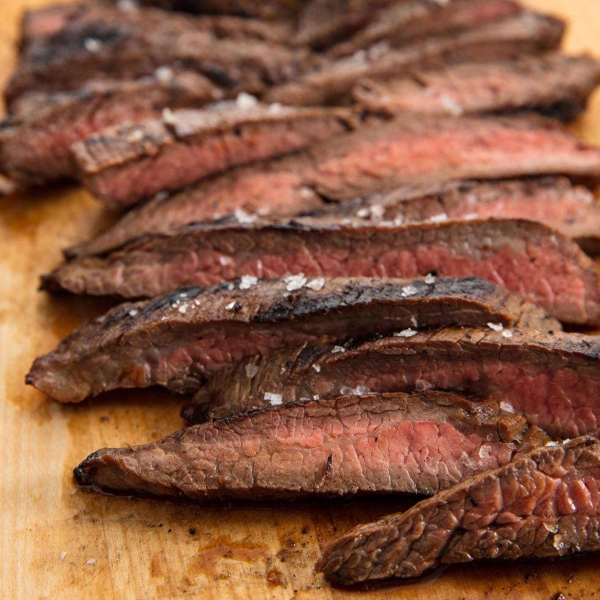

Steak

Description
This steak is cut from beef shoulder and less expensive than other steaks
Ingredients
- 1 (2 pound) flat iron steak
- 2 ½ tablespoons olive oil
- 2 cloves garlic, minced
- 1 teaspoon chopped fresh parsley
- ¼ teaspoon chopped fresh rosemary
- ½ teaspoon chopped fresh chives
- ¼ cup Cabernet Sauvignon (or other dry red wine)
- ½ teaspoon salt
- ¾ teaspoon ground black pepper
- ¼ teaspoon dry mustard powder
Steps
- Place steak inside a large resealable bag. Stir olive oil, garlic, parsley, rosemary
chives, red wine, salt, pepper, and mustard
powder together in a small bowl.
- Pour marinade over steak in the bag. Press out as much air as you can and seal
the bag. Marinate in the refrigerator for
2 to 3 hours.
- Heat a nonstick skillet over medium-high heat. Sear and cook the steak in the
hot skillet for 3 to 4 minutes on each side for
medium rare, or to your desired
degree of doneness. An instant-read thermometer inserted into the center
should read 130
degrees F (54 degrees C) for medium rare.
- Discard the marinade. Allow the steaks to rest for about 5 minutes before serving.
Odin recipes